Pretty base plots
Anand Mayakonda
Last updated: 2023-11-03
Checks: 7 0
Knit directory: basegraphics/
This reproducible R Markdown analysis was created with workflowr (version 1.7.0). The Checks tab describes the reproducibility checks that were applied when the results were created. The Past versions tab lists the development history.
Great! Since the R Markdown file has been committed to the Git repository, you know the exact version of the code that produced these results.
Great job! The global environment was empty. Objects defined in the global environment can affect the analysis in your R Markdown file in unknown ways. For reproduciblity it’s best to always run the code in an empty environment.
The command set.seed(20220715) was run prior to running
the code in the R Markdown file. Setting a seed ensures that any results
that rely on randomness, e.g. subsampling or permutations, are
reproducible.
Great job! Recording the operating system, R version, and package versions is critical for reproducibility.
Nice! There were no cached chunks for this analysis, so you can be confident that you successfully produced the results during this run.
Great job! Using relative paths to the files within your workflowr project makes it easier to run your code on other machines.
Great! You are using Git for version control. Tracking code development and connecting the code version to the results is critical for reproducibility.
The results in this page were generated with repository version 4970d61. See the Past versions tab to see a history of the changes made to the R Markdown and HTML files.
Note that you need to be careful to ensure that all relevant files for
the analysis have been committed to Git prior to generating the results
(you can use wflow_publish or
wflow_git_commit). workflowr only checks the R Markdown
file, but you know if there are other scripts or data files that it
depends on. Below is the status of the Git repository when the results
were generated:
Ignored files:
Ignored: .Rhistory
Ignored: .Rproj.user/
Untracked files:
Untracked: data/22-median_2022_student_debt.tsv
Note that any generated files, e.g. HTML, png, CSS, etc., are not included in this status report because it is ok for generated content to have uncommitted changes.
These are the previous versions of the repository in which changes were
made to the R Markdown (analysis/baseplots.Rmd) and HTML
(docs/baseplots.html) files. If you’ve configured a remote
Git repository (see ?wflow_git_remote), click on the
hyperlinks in the table below to view the files as they were in that
past version.
| File | Version | Author | Date | Message |
|---|---|---|---|---|
| Rmd | 4970d61 | Anand Mayakonda | 2023-11-03 | US student debt |
| html | a6bd433 | Anand | 2023-10-17 | Build site. |
| Rmd | 01d61ce | Anand | 2023-10-17 | workflowr::wflow_publish(files = "analysis/baseplots.Rmd") |
| Rmd | 5f58119 | Anand Mayakonda | 2023-10-13 | gold mines |
| html | f279152 | Anand | 2023-05-28 | Build site. |
| Rmd | 42e68e6 | Anand | 2023-05-28 | workflowr::wflow_publish(files = c("analysis/baseplots.Rmd", |
| html | e3f28b2 | Anand | 2023-04-12 | Build site. |
| Rmd | 2da9d38 | Anand | 2023-04-12 | workflowr::wflow_publish(files = "analysis/baseplots.Rmd") |
| html | 553f7de | Anand | 2023-04-02 | Build site. |
| Rmd | 679f14c | Anand | 2023-04-02 | workflowr::wflow_publish(files = c("analysis/baseplots.Rmd", |
| html | fd38753 | Anand | 2023-03-26 | Build site. |
| Rmd | 54f4ae4 | Anand | 2023-03-26 | brand wars |
| html | bb723cc | Anand | 2022-10-16 | Build site. |
| Rmd | cdd7242 | Anand | 2022-10-16 | browserwars |
| html | fe9fcf4 | Anand | 2022-10-11 | Build site. |
| Rmd | d4fe512 | Anand | 2022-10-11 | marathon finish times |
| html | 4906871 | Anand | 2022-08-30 | Build site. |
| Rmd | 23befe6 | Anand | 2022-08-30 | job change |
| html | d8b5266 | Anand | 2022-08-22 | Build site. |
| html | 91aa770 | Anand | 2022-08-22 | workflowr::wflow_publish(files = c("analysis/baseplots.Rmd", |
| Rmd | 848d905 | Anand | 2022-08-22 | blood donuts |
| html | 9c9607b | PoisonAlien | 2022-07-18 | Build site. |
| Rmd | 4b6aa1e | PoisonAlien | 2022-07-18 | workflowr::wflow_publish(files = "analysis/baseplots.Rmd") |
| html | 4f94642 | PoisonAlien | 2022-07-18 | Build site. |
| Rmd | dc7d6c5 | PoisonAlien | 2022-07-18 | workflowr::wflow_publish(files = "analysis/baseplots.Rmd") |
| html | 7d5d068 | PoisonAlien | 2022-07-16 | Build site. |
| Rmd | 4cd02d0 | PoisonAlien | 2022-07-16 | workflowr |
Introduction
This document demonstrates the usage of base R graphics
to generate visually appealing plots, without any dependencies.
Most of the plots are recreated as is from several sources. My gratitude to them for all the hard work and making it accessible/open
Acknowledgments:
Following are the major sources of all the recreated plots.
Finally, I apologize in advance for the uncomment code.
2022 student debt
Recreating the plot from visualcapitalist
data = read.delim(file = "data/22-median_2022_student_debt.tsv")
data$Major = gsub(pattern = "\\n", replacement = "", data$Major)
#Choose top 20 entries
top = 40
d = lapply(split(data, ~degree), function(x) x[1:top,,])[[1]]
#Some heatmap colors
cols = colorRampPalette(c("#c0392b", "#273c75"))(top)
cols = adjustcolor(col = cols, 0.8)
study_facs = table(d$Study)
study_facs_cols = hcl.colors(n = length(study_facs), palette = "Dark 3")
names(study_facs_cols) = names(study_facs)
par(mar = c(1, 0, 2, 3), fig = c(0,1,0,1))
plot(NA, xlim = c(-1, max(d$median_debt)), ylim = c(0, top+1), frame.plot = FALSE, axes = FALSE, xlab = NA, ylab = NA)
#abline(v = seq(0, 50, 10), lwd = 0.6, lty = 2, col = "#bdc3c7")
rect(xleft = 0, ybottom = seq(0, top-1), xright = d$median_debt, ytop = seq(1, top), col = cols, border = "#ecf0f1")
rect(xleft = -1, ybottom = seq(0, top-1), xright = -0.2, ytop = seq(1, top), col = study_facs_cols[d$Study], border = "#ecf0f1")
text(x = 0.2, y = seq(0.5, top-0.5, 1), label = d$Major, adj = 0, col = "white", cex = 0.8, font = 2)
text(x = d$median_debt, y = seq(1, top)-0.5, labels = paste0("$", d$median_debt, "K"), pos = 4, xpd = TRUE, col = "#2c3e50", family = "serif", cex = 0.8)
mtext(text = "2022 Median Debt", side = 1, cex = 1.2, family = "serif", line = -1, font = 2, adj = 1)
title(main = "S T U D E N T - D E B T - R A N K I N G", font.main = 2, family = "mono", cex.main = 2)
title(main = "U.S. - B A C H E L O R'S - D E G R E E S", font.main = 1, family = "mono", cex.main = 1.2, line = -1)
legend(x = 0.7 * max(d$median_debt), y = nrow(d) - 1, legend = names(study_facs_cols), fill = study_facs_cols, ncol = 1, bty = "n", border = NA, title = "Study")
par(fig = c(0.7,1, 0.2, 0.7), new = T)
debt_over_time = data.frame(year = c("2005", "2010", "2015", "2020"), public = c(25, 27, 30, 27), private = c(33, 35, 36, 33))
plot(NA, xlim = c(0, 5), ylim = c(24, 40), axes = FALSE)
abline(h = seq(25, 35, 5), lty = 2, col = "gray")
points(x = 1:nrow(debt_over_time), y = debt_over_time$public, type = 'b', col = "#27ae60")
points(x = 1:nrow(debt_over_time), y = debt_over_time$private, type = 'b', col = "#8e44ad")
text(x = 2.5, y = min(debt_over_time$public), label = "Public", font= 2, cex = 0.8, col = "#27ae60")
text(x = 2.5, y = min(debt_over_time$private), label = "Private", font= 2, cex = 0.8, col = "#8e44ad")
text(x = 1:nrow(debt_over_time), y = debt_over_time$public, labels = paste0("$", debt_over_time$public, "K"), pos = 3, cex = 0.6, font= 2)
text(x = 1:nrow(debt_over_time), y = debt_over_time$private, labels = paste0("$", debt_over_time$private, "K"), pos = 3, cex = 0.6, font= 2)
text(x = 1:nrow(debt_over_time), y = 24, labels = debt_over_time$year, cex = 0.6, srt = 45)
text(x = 0, y = 39, label = "Avg. debt over time", adj = 0, family = "mono", font = 2)
box(lty = 5)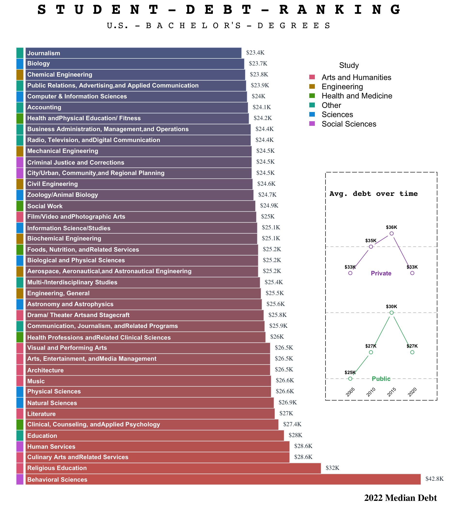
Top Gold Mining Stocks
Recreating the plot from visualcapitalist
data = read.delim(file = "data/21-top_gold_mining_stocks.tsv")
lo = layout(mat = matrix(data = c(1,2,3), ncol = 3, byrow = FALSE), widths = c(1.7, 7, 2))
par(mar = c(3, 0, 4, 0))
plot(NA, xlim = c(0,1), ylim = c(0, 11), axes = FALSE)
for(i in seq_along(data$Performance)){
text(x = 0, y = i, labels = paste0(i, ". ",data$Company[i]), font= 2, pos= 4, cex = 0.85, col = "#2c3e50")
}
text(y = 11.4, x = 0.5, labels = c("GDX INDEX\nRANK"), col =c("#34495e"), cex = 0.8, font = 2, xpd= TRUE)
barcols = ifelse(test = data$Performance < 0, yes = "#c0392b", no = "#40739e")
par(mar = c(3, 0, 4, 0), bg = "white")
plot(NA, xlim = c(-40, 160), ylim = c(0, 11), axes = FALSE)
if("berryFunctions" %in% installed.packages()){
berryFunctions::roundedRect(xleft = -40, ybottom = 0, xright = 160, ytop = 11, col = "gray90", border = NA, rounding = 0.05)
}else{
rect(xleft = -40, ybottom = 0, xright = 160, ytop = 11, col = "gray90", border = NA)
}
abline(v = seq(-40, 160, 10), lty = 1, col = "white")
rect(xleft = c(23, 25.1), ybottom = c(-0.50, -0.50), xright = c(23, 25.1), ytop = c(11, 11), border = c("#f39c12", "#d35400"))
text(y = 11.1, x = c(5, -5), labels = c("BETTER PERFORMANCE", "WORSE PERFORMANCE"), pos = c(4, 2), col =c("#40739e", "#c0392b"), cex = 0.6, font = 2)
text(y = 11.5, x = seq(-40, 160, 10), label = paste0(seq(-40, 160, 10), "%"), cex = 0.7, xpd = TRUE, font= 2, col = "#34495e")
text(x = c(23, 25.1), y = -0.3, labels = c("GDX PERFORMANCE 23%","GOLD PERFORMANCE 25.1%"), pos = c(2, 4), cex = 0.65, col =c("#f39c12", "#d35400"), font= 2)
for(i in seq_along(data$Performance)){
rect(xleft = 0, ybottom = i - 0.4, xright = data$Performance[i], ytop = i + 0.4, col = barcols[i], border = NA)
text(x = data$Performance[i], y = i, labels = paste0(data$Performance[i], "%"), pos = ifelse(test = data$Performance[i] < 0, 2, 4), col = barcols[i], font = 2)
}
rect(xleft = 0, ybottom = 0, xright = 0, ytop = 11, border = "black")
title(main = "PERFORMANCE OF THE GDX", line = 3, col.main = "#2c3e50")
title(main = "AND ITS CONSTITUENT STOCKS IN 2020", cex.main = 0.8, col.main = "#34495e")
title(main = NA, sub = "Performance of the 10 companies ranked highest in the GDX index.", line = 1.5, col.sub = "#34495e", font.sub=2)
desc = "The GDX index is market-cap weighted,\nmeaning companies with a larger\nmarket capitalization
make up more of the index."
text(x = 30, y = 6.3, label = desc, pos = 4, cex = 1, font = 2)
par(mar = c(3, 0, 4, 0))
plot(NA, xlim = c(0,1), ylim = c(0, 11), axes =FALSE )
symbols(
x = rep(0.6, nrow(data)),
y = rev(seq_along(data$Company)),
circles = rev(sqrt(abs(data$Market_cap / pi))),
add = TRUE, inches = 0.25, bg = adjustcolor(col = rev(barcols), 0.6), fg = "white", xpd = TRUE)
for(i in seq_along(data$Performance)){
text(x = 0, y = i, labels = paste0("$", data$Market_cap[i], "B"), font= 2, pos= 4, cex = 1, col = barcols[i])
}
text(y = 11.4, x = 0.5, labels = c("MARKET CAP\nUSD"), col =c("#34495e"), cex = 0.8, font = 2, xpd= TRUE)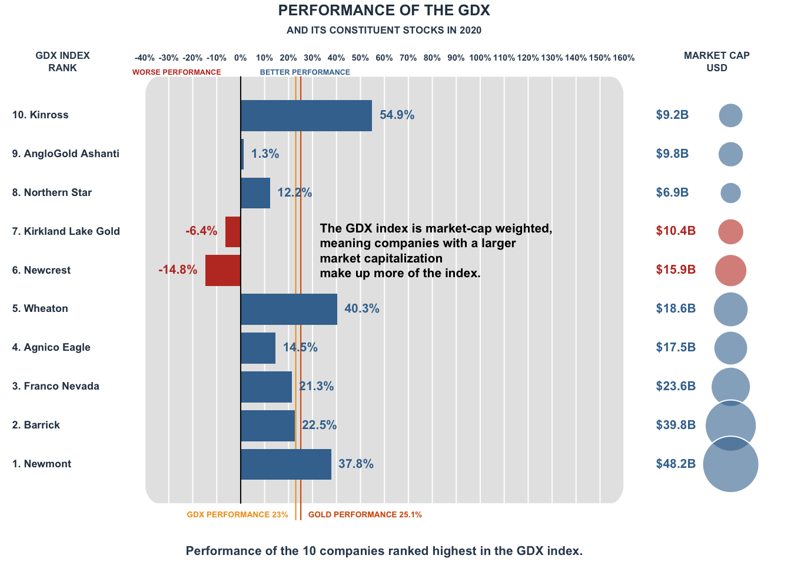
| Version | Author | Date |
|---|---|---|
| a6bd433 | Anand | 2023-10-17 |
Barcode chart: Age group in US
Recreating barcode chart from observablehq
data = read.csv(file = 'data/19-barcodechart_USagegroup.csv')
rownames(data) = data$name
data$name = NULL
data = apply(data, 1, function(x) x/sum(x))
par(mar = c(2.4, 4, 2, 1), col = '#2c3e50', family = "serif")
plot(NA, ylim = c(0, nrow(data)+0.5), xlim = c(0, 0.2), axes = FALSE, xlab = NA, ylab = NA)
abline(v = seq(0, 0.3, 0.05), col = 'gray70', lwd = 0.2)
abline(h = 1:nrow(data), col = 'gray80', lwd = 0.2, lty = 2)
tmp = lapply(1:nrow(data), function(idx){
d = data[idx,]
points(x = d, y = rep(idx, length(d)), pch = '|')
})
axiscol = grDevices::adjustcolor(col = '#2c3e50', alpha.f = 0.9)
axis(side = 2, at = 1:nrow(data), labels = c('<10', '10-19', '20-29', '30-39', '40-49', '50-59', '60-69', '70-79', '>80'), las = 2, tick = FALSE, col.axis = axiscol, cex.axis = 0.7)
axis(side = 1, at = seq(0, 0.3, 0.05), labels = seq(0, 0.3, 0.05) * 100, tick = FALSE, line = -1, col.axis = axiscol, cex.axis = 0.7)
mtext(text = 'Population (%)', side = 1, line = 1, adj = 1, cex = 0.7)
mtext(text = 'Age (years)', side = 2, line = 3, adj = 0, cex = 0.7, las = 2, at = nrow(data)+1.6, padj = 3)
title(main = "Percentage of each age class in every state of USA", cex.main = 0.85, adj = 0, col.main = "#2c3e50")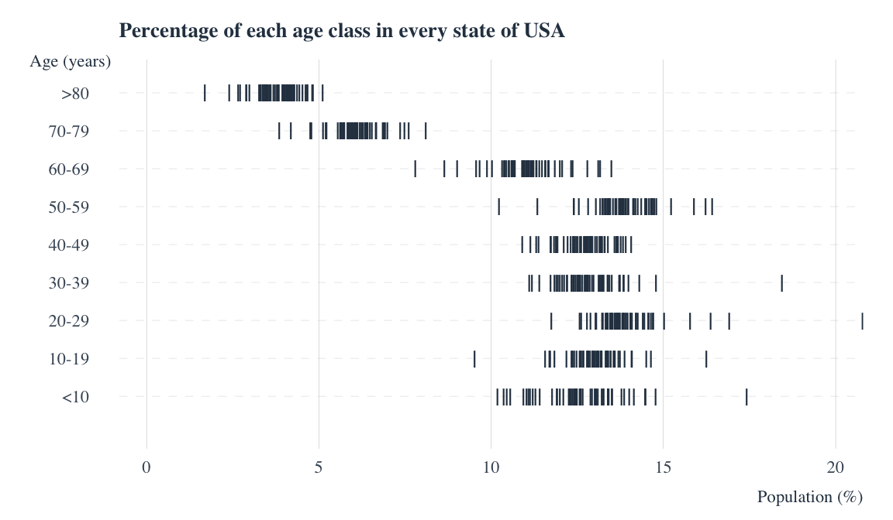
| Version | Author | Date |
|---|---|---|
| f279152 | Anand | 2023-05-28 |
Clean energy manufactured
Recreating the plot from Visual Capitalist
lo_mat = matrix(data = c(1, 1, 2, 2, 3, 4), ncol = 2, byrow = TRUE)
lo = layout(mat = lo_mat, widths = c(4, 0.6), heights = c(1, 0.8, 4))
title1 = "WHERE ARE THE CLEAN-ENERGY TECHNOLOGIES"
title2 = "M A N U F A C T U R E D?"
title3 = "As the market for low-emission solutions expands, China dominates the production of
clean energy technologies and their components."
par(mar = c(0, 0, 0, 0), bg = "#2d3436", col = "white")
plot(NA, xlim = c(0, 1), ylim = c(0.1, 1), axes = FALSE)
text(x = 0.5, y = 0.9, label = title1, font = 2, cex = 1.2)
text(x = 0.5, y = 0.7, label = title2, font = 2, cex = 1.4)
text(x = 0.5, y = 0.3, label = title3, xpd = TRUE, cex = 1.1)
par(mar = c(0, 0, 0, 0), bg = "#2d3436", col = "white")
plot(NA, xlim = c(0, 1), ylim = c(0.1, 0.6), axes = FALSE)
country_cols = c("#c0392b", "#e67e22", "#16a085", "#3498db", "#95a5a6")
names(country_cols) = c("China", "AsiaPacific", "Europe", "NorthAmerica", "Other")
legend(x = 0, y = 0.5, legend = names(country_cols),
col = country_cols, pch = 15, ncol = 5, cex = 1,
border = NA, xpd = TRUE, box.col = "white", pt.cex = 1.8)
data = read.delim("data/18-cleanEnergy_manufacturer.tsv")
data$cat = paste(data$source, data$element, sep = "_")
n_cat = rev(table(data$cat)[unique(data$cat)])
y_bottoms = seq(0.1, 16.1, 1)
y_tops = seq(0.9, 16.9, 1)
par(mar = c(2, 4, 0.5, 0), bg = "#2d3436", col = "white")
plot(NA, xlim = c(0, 100), ylim = c(0, length(n_cat)), xlab = NA, ylab = NA, axes = FALSE)
for(i in seq_len(length(n_cat))){
d = data[data$cat == names(n_cat)[i],]
d_cumsum = cumsum(d$pct)
x_right = cumsum(d$pct)
x_left = c(0, d_cumsum[1:length(d_cumsum) - 1])
rect(
xleft = x_left,
ybottom = y_bottoms[i],
xright = x_right,
ytop = y_tops[i],
col = country_cols[d$Country], border = "#34495e"
)
text(x = 0, y = y_bottoms[i]+0.25, label = unique(d$element), cex = 0.7, pos = 2, xpd = NA)
}
at_lines = c()
for(s in unique(data$source)){
at_lines = c(at_lines, length(unique(data[data$source == s, "element"])))
}
rect(xleft = -100, ybottom = cumsum(rev(at_lines))-0.03, xright = 100, ytop = cumsum(rev(at_lines)), border = NA, col = "white", xpd = TRUE)
rect(xleft = 0, ybottom = 0, xright = 0.1, ytop = 17, border = NA, col = "white", lwd = 2)
rect(xleft = -100, ybottom = 0, xright = 100, ytop = 0+0.03, border = NA, col = "white", lwd = 2, xpd = NA)
abline(v = 65, lty = 2)
text(x = 65, y = 17.5, label = "China's avergae: 65%", col = country_cols["China"], xpd = NA, cex = 0.7, adj = -0.1)
text(x = 50, y = 18.5, label = "Shares of manufacturing capacity by region, 2021", col = "white", xpd = NA, cex = 0.8, adj = 0.5, font = 2)
text(x = 0, y = 17.5, label = "Component", col = "white", xpd = NA, cex = 0.8, adj = 0.1, font = 4, pos = 2)
text(x = 105, y = 17.5, label = "Technology", col = "white", xpd = NA, cex = 0.8, adj = 0.1, font = 4, pos = 4)
axis(side = 1, at = seq(0, 100, 20), line = 0, col = "white", col.ticks = "white", col.axis = "white")
par(mar = c(2, 0, 0.5, 0), bg = "#2d3436", col = "white")
plot(NA, xlim = c(0, 1), ylim = c(0, length(n_cat)), xlab = NA, ylab = NA, axes = FALSE)
lbs = c("Electrolyzers", "Heat Pumps", "Fuel cell\nTrucks", "EV", "Solar",
"Onshore\nWind", "Offshore\nWind")
text(x = 0, y = c(0.25, 1.5, 3, 6, 9.5, 12.5, 15.5), labels = lbs, adj = 1, xpd = NA, cex = 0.7, pos = 4, font = 2)
rect(xleft = -200, ybottom = cumsum(rev(at_lines))-0.03, xright = 100, ytop = cumsum(rev(at_lines)), border = NA, col = "white", xpd = TRUE)
Time spent by age
Recreating the plot from Visual Capitalist
data = read.delim("data/17-time-spent-with-relationships-by-age-us.csv", sep = ",")
colnames(data) = c("Entity", "Code", "Year", "alone", "frinds", "children", "parents", "partner", "coworkers")
cols = hcl.colors(n = 6, palette = "Dark 3")
par(mar = c(2, 2, 4, 3))
plot(NA, xlim = c(15, 85), ylim = c(0, 8.4), xlab = NA, ylab = NA, axes = FALSE)
grid()
for(i in 4:ncol(data)){
points(x = data$Year, y = data[,i]/60, type = "l", col = cols[i-3])
points(x = data$Year, y = data[,i]/60, col = cols[i-3], cex = 0.3, pch = 19)
text(x = 86, y = data[nrow(data),i]/60, labels = colnames(data)[i], pos = 4, xpd = TRUE, cex = 0.6)
}
ttl = "Who Americans Spend Their Time With, by Age"
subttl = "\nAverage time spent with others is measured in minutes per day,and shown by \nthe age of the respondent.This is based on averages from surveys \nbetween 2009 and 2019."
title(main = ttl, adj = 0, cex.main = 1, line = 3, col.main = "#2c3e50", family = "serif")
title(main = subttl, adj = 0, cex.main = 0.7, line = 0.9, font.main = 1, col.main = "#7f8c8d", family = "serif")
mtext(text = axTicks(side = 1), side = 1, at = axTicks(side = 1), line = 0.2, col = "#636e72", family = "mono")
mtext(text = "Age in years", side = 1, line = 0.8, las = 1, at = 70, adj = 0, cex = 0.6, col= "#3c6382")
mtext(text = axTicks(side = 2), side = 2, at = axTicks(side = 2), line = 0, las = 2, col = "#636e72", family = "mono")
mtext(text = "Time spent in hours", side = 2, line = 0.8, las = 3, at = 6, adj = 0, cex = 0.6, col= "#3c6382")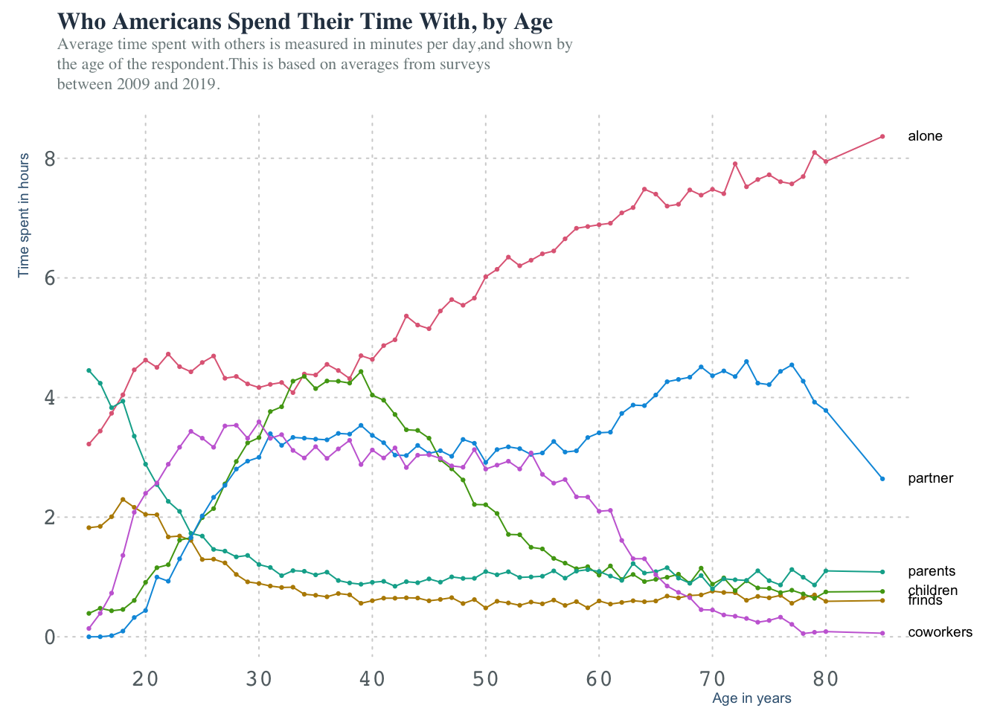
| Version | Author | Date |
|---|---|---|
| 553f7de | Anand | 2023-04-02 |
Brand wars: Top global brands
Recreating the plot from d3
NOTE Although the plots are generated with base code, converting into a gif requires ImageMagik to be installed.
data = read.csv(file = "data/16-global_brands.csv")
single_entries = names(which(table(data$name) == 1))
data = data[!data$name %in% single_entries,]
mod_data = lapply(split(data, data$name), function(d){
brand = unique(d$name)
category = unique(d$category)
d_brand = lapply(1:(nrow(d)-1), function(idx){
val_idx = d[idx, "value"]
val_idx_next = d[idx+1, "value"]
date_idx = d[idx, "date"]
date_idx_next = d[idx+1, "date"]
seq_date = seq.Date(from = as.Date(date_idx), to = as.Date(date_idx_next), by = 'month')
data.frame(date = seq_date, value = round(seq(from = val_idx, to = val_idx_next, length.out = length(seq_date))))
})
d_brand = do.call(what = "rbind", d_brand)
d_brand$brand = brand
d_brand$category = category
d_brand
})
mod_data = do.call(what = "rbind", mod_data)
mod_data$date = as.Date(as.character(mod_data$date))
fnames = lapply(split(mod_data, mod_data$date), function(pd){
pd = pd[!duplicated(pd$brand),]
fname = NA
if(nrow(pd) >= 12){
pd = pd[order(pd$value, decreasing = T),][1:12,]
pd$value = ifelse(test = is.na(pd$value), yes = 0, no = pd$value)
fname = tempfile(pattern = "gb", fileext = ".png")
png(filename = fname, width = 750, height = 655, bg = "white", res = 120)
par(mar = c(0, 6, 0, 0))
plot(NA, xlim = c(0, max(pd$value)), ylim = c(0, 13), frame.plot = FALSE, axes = FALSE, xlab =NA, ylab = NA)
#main rect
rect(xleft = 0, ybottom = seq(0.1, 11.1, by = 1), ytop = seq(0.9, 11.9, by = 1), xright = rev(pd$value), col = "#fdcb6e", border = "#fdcb6e")
#add value to the end of rect
text(x = rev(pd$value), y = seq(0.45, 11.45, by = 1), labels = rev(pd$value), adj = 1, cex = 0.6, col = "black")
#Add category to the beginning
text(x = 100, y = seq(0.45, 11.45, by = 1), labels = rev(pd$category), adj = 0, cex = 0.6, col = "#636e72")
#add brand name as row names
text(x = -0.5, y = seq(0.45, 11.45, by = 1), labels = rev(pd$brand), adj = 1.1, xpd = TRUE, cex = 0.9, col = "#34495e", family = "mono")
#add top y axis labs
text(x = pretty(c(0, pd$value)), y = 12, labels = pretty(c(0, pd$value)), pos = 3, cex = 0.5)
rect(xleft = pretty(c(0, pd$value)), ybottom = 0, xright = pretty(c(0, pd$value)), ytop = 12, col = "maroon", border = "white")
#add year in progress
legend(x = "bottomright", legend = unique(substr(pd$date, 1, 4)), col = "#2c3e50", bty = "n", text.font = 2, cex = 1.5)
title(main = "Top global brands", line = -1, adj = 0)
title(main = "value in $M", line = -1.8, adj = 0, cex.main = 0.6, col.main = "#2c3e50")
dev.off()
}
fname
})
pngs = unlist(fnames, use.names = FALSE)
cmd = paste0("convert -loop 0 -delay 8 ", paste(pngs, collapse = ' '), " globalbrands.gif")
sys.log = system(command = cmd, intern = TRUE)
Piechart: Browser market share
Recreating the plot from visualcapitalist. See here for data compilation code.
NOTE Although the plots are generated with base code, converting into a gif requires ImageMagik to be installed.
data = read.delim(file = "data/15-pieanimate_browserWars_compileData.tsv", header = TRUE)
data$Total = round(data$Total, 2)
data$browser = gsub(pattern = "Other", replacement = "others", x = data$browser)
#Order by months
data = lapply(split(data, data$year), function(x){
x[order(factor(x$month, levels = month.name)),]
})
data = do.call(what = rbind, data)
data$month = as.character(data$month)
browsercols = c("#16a085", "#2980b9", "#f39c12", "#8e44ad", "#e74c3c", "gray") #hcl.colors(n = 6, palette = "Dark2")
names(browsercols) = c("chrome", "explorer", "firefox", "opera", "safari", "others")
#pie() with an added argument labcol
pie2 = function (x, labels = names(x), edges = 200, radius = 0.8, clockwise = FALSE,
init.angle = if (clockwise) 90 else 0, density = NULL, angle = 45,
col = NULL, border = NULL, lty = NULL, main = NULL, labcol = "black", ...)
{
if (!is.numeric(x) || any(is.na(x) | x < 0))
stop("'x' values must be positive.")
if (is.null(labels))
labels <- as.character(seq_along(x))
else labels <- as.graphicsAnnot(labels)
x <- c(0, cumsum(x)/sum(x))
dx <- diff(x)
nx <- length(dx)
plot.new()
pin <- par("pin")
xlim <- ylim <- c(-1, 1)
if (pin[1L] > pin[2L])
xlim <- (pin[1L]/pin[2L]) * xlim
else ylim <- (pin[2L]/pin[1L]) * ylim
dev.hold()
on.exit(dev.flush())
plot.window(xlim, ylim, "", asp = 1)
if (is.null(col))
col <- if (is.null(density))
c("white", "lightblue", "mistyrose", "lightcyan",
"lavender", "cornsilk")
else par("fg")
if (!is.null(col))
col <- rep_len(col, nx)
if (!is.null(border))
border <- rep_len(border, nx)
if (!is.null(lty))
lty <- rep_len(lty, nx)
angle <- rep(angle, nx)
if (!is.null(density))
density <- rep_len(density, nx)
twopi <- if (clockwise)
-2 * pi
else 2 * pi
t2xy <- function(t) {
t2p <- twopi * t + init.angle * pi/180
list(x = radius * cos(t2p), y = radius * sin(t2p))
}
for (i in 1L:nx) {
n <- max(2, floor(edges * dx[i]))
P <- t2xy(seq.int(x[i], x[i + 1], length.out = n))
polygon(c(P$x, 0), c(P$y, 0), density = density[i], angle = angle[i],
border = border[i], col = col[i], lty = lty[i])
P <- t2xy(mean(x[i + 0:1]))
lab <- as.character(labels[i])
if (!is.na(lab) && nzchar(lab)) {
lines(c(1, 1.05) * P$x, c(1, 1.05) * P$y)
text(1.1 * P$x, 1.1 * P$y, labels[i], xpd = TRUE,
adj = ifelse(P$x < 0, 1, 0), col = labcol[i], ...)
}
}
title(main = main, ...)
invisible(NULL)
}
dataspl = split(data, data$date_obs)
pngs = lapply(dataspl, function(x){
fname = tempfile(fileext = '.png')
png(filename = fname, res = 110)
par(mar = c(2, 4, 3, 4), family = "mono") #bg = "#ecf0f1"
pie2(
x = x$Total,
labcol = rep("#2c3e50", nrow(x)), #browsercols[x$browser],
col = browsercols[x$browser],
radius = 1,
labels = paste0(x$browser, "\n[", x$Total, "%]"),
xpd = TRUE,
outer = TRUE, cex = 1, border = browsercols[x$browser], font = 2
)
points(x = 0, y = 0, pch = 19, cex = 18, col = "white", lwd = 0)
text(x = 0, y = -.1, label = x$year[1], adj = 0.5, cex = 2, col = "#c0392b", font = 2)
text(x = 0, y = .1, label = x$month[1], adj = 0.5, cex = 1.2, col = "#e74c3c", font = 2)
title(main = "WEB BROWSERS MARKET SHARE\n2002-2022", adj = 0.5, cex.main = 1.5, line = 0, col.main = "#2c3e50")
dev.off()
fname
})
pngs = unlist(pngs, use.names = FALSE)
cmd = paste0("convert -loop 0 -delay 15 ", paste(pngs, collapse = ' '), " pianimate.gif")
sys.log = system(command = cmd, intern = TRUE)

Barplot: Berlin Marathon 2022 Finish times
2022 Berlin marathon set the new record for fastest marathon finish by Eliud Kipchoge. Lets celebrate this by recreating the STRAVA inspired Berlin marathon finish times. Of course the plot is not nearly identical to the one on strava and I suspect there might have been issues with data scraping.
This is how got the raw data:
Max 100 results per page. There are 356 pages on the official site
#!/usr/bin/env bash
for (( i = 1; i < 356; i++ )); do
echo ${i}
url="https://berlin.r.mikatiming.com/2022/?page=${i}&event=BML&num_results=100&pid=search&search%5Bage_class%5D=%25&search%5Bsex%5D=%25&search%5Bnation%5D=%25&search_sort=name"
wget -O berlin.html ${url}
grep type-fullname berlin.html | tr '>' '\t' | cut -f 3 | tr '<' '\t' | cut -f1 | uniq > runner_${i}.tsv
grep Finish berlin.html | tr '>' '\t' | grep -v 'pan class' | cut -f 4 | tr '<' '\t' | cut -f1 > times_${i}.tsv
done
cat times_* | grep -v Finish | grep -v DSQ > 14-barplot_BerlinMarathon2022.tsvdata = read.delim(file = "data/14-barplot_BerlinMarathon2022.tsv", header = FALSE)
data$secs = apply(X = data, MARGIN = 1, FUN = function(x){
sapply(strsplit(x = x, split = ":"), function(x) {
as.numeric(x[1]) * 3600 + as.numeric(x[2]) * 60 + as.numeric(x[3])
})
})
data$mins = data$secs / 60
data$cut = cut(x = data$mins, breaks = seq(90, 480, 1))
hcol = adjustcolor(col = '#d35400', alpha.f = 0.6)
par(mar = c(3, 2, 3, 1), family = "mono")
plot.new()
plot.window(xlim = c(0, 390), ylim = range(table(data$cut)))
abline(v = seq(0, 390, 30), col = "#ecf0f1")
points(table(data$cut), type = 'h', col = hcol)
#axis(side = 1, at = seq(0, 390, 30), labels = seq(90, 480, 30)/60, las = 2, col.axis = "#34495e", tick = FALSE, )
text(
x = seq(0, 390, 30),
y = -45,
labels = c(
"1:30",
"2:00",
"2:30",
"3:00",
"3:30",
"4:00",
"4:30",
"5:00",
"5:30",
"6:00",
"6:30",
"7:00",
"7:30",
"8:00"
),
srt = -45,
xpd = TRUE,
cex = 0.8, col = "#2c3e50"
)
kipchoge_slot_idx = which(names(table(data$cut)) == "(121,122]")
assefa_slot_idx = which(names(table(data$cut)) == "(135,136]")
median_time = median(data$secs) #245.7 i.e: 04:05:42
median_time_idx = which(names(table(data$cut)) == "(245,246]")
rect(xleft = kipchoge_slot_idx, ybottom = 0, xright = kipchoge_slot_idx, ytop = 100, border = "#34495e", lwd = 1.2)
text(x = kipchoge_slot_idx, y = 90, labels = "KIPCHOGE\n2:01:09", cex = 0.7, pos = 3, font = 2)
rect(xleft = assefa_slot_idx, ybottom = 0, xright = assefa_slot_idx, ytop = 200, border = "#95a5a6", lwd = 1.2)
text(x = assefa_slot_idx, y = 190, labels = "ASSEFA\n2:15:37", cex = 0.7, pos = 3, font = 2)
rect(xleft = median_time_idx, ybottom = 0, xright = median_time_idx, ytop = 90, border = "#34495e", lwd = 1.2)
text(x = median_time_idx, y = 90, labels = "MEDIAN\n04:05:42", cex = 0.7, pos = 3, font = 2)
mtext(text = "TIME [H:MM]", side = 1, line = 2)
mtext(text = "NUMBER OF ATHLETES", side = 2, line = 0.5)
title(main = "BMW BERLIN-MARATHON 2022: FINISH TIMES", col.main = "#2c3e50")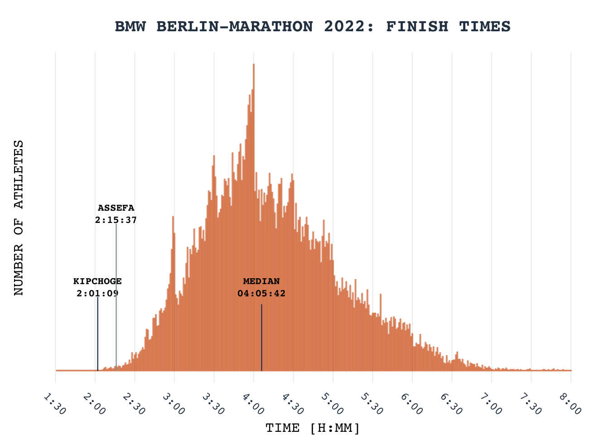
| Version | Author | Date |
|---|---|---|
| fd38753 | Anand | 2023-03-26 |
Bubble chart: Fastest growing/declining jobs
Recreating the plot from visualcapitalist. Data is provided as a table in the corresponding article.
data = read.delim(file = "data/11-bubblechart_furturejobs2030.tsv")
cols = c("#16a085", "#2980b9", "#f39c12", "#8e44ad", "#e74c3c")
cols = adjustcolor(col = cols, alpha.f = 0.6)
names(cols) = names(table(data$categ))
par(mar = c(1, 4, 4, 4), family = "sans", bg = "#ecf0f1")
plot(NA, xlim = range(pretty(data$median_ann_wage)), ylim = c(-40, 80), axes = FALSE, xlab = NA, ylab = NA)
grid(col = "gray80")
symbols(
x = data$median_ann_wage,
y = data$pct_empl_change,
circles = sqrt(abs(data$num_empl_change / pi)),
add = TRUE, inches = 0.9, bg = cols[data$categ], fg = "#ecf0f1"
)
#rect(xleft = seq(45, 105, 15)*1000, ybottom = 75, xright = seq(60, 120, 15)*1000, ytop = 80, col = cols, border = cols)
rect(xleft = seq(70, 110, 10)*1000, ybottom = 75, xright = seq(80, 120, 10)*1000, ytop = 80, col = cols, border = cols)
text(x = seq(75, 115, 10)*1000, y = 85, labels = c("Computer\n&math", "Health\nrerlated", "Office\nsupport", "Other", "Production"), xpd = TRUE, adj = 0.5, family = "sans", cex = 0.65)
if("berryFunctions" %in% installed.packages()){
berryFunctions::roundedRect(xleft = 68*1000, ybottom = 72, xright = 122*1000, ytop = 90, xpd = FALSE, lwd = 1.4)
}else{
rect(xleft = 40*1000, ybottom = 72, xright = 122*1000, ytop = 90, xpd = FALSE, lwd = 1.4)
}
axis(side = 2, at = seq(0, 80, 20), tick = FALSE, las = 2, labels = paste0(seq(0, 80, 20), "%"), col.axis = "#34495e", line = -0.75, cex.axis = 0.8)
mtext(text = "Employment change %\n2020-2030", side = 2, at = 60, line = 2, col = "#2c3e50", cex = 0.9)
axis(side = 4, at = seq(-20, -40, -20), tick = FALSE, las = 2, labels = paste0(seq(-20, -40, -20), "%"), col.axis = "#34495e", cex.axis = 0.8, line = -0.75)
rect(xleft = 20000, ybottom = 0, xright = 120000, ytop = 0)
text(x = pretty(data$median_ann_wage), y = 0, labels = paste0(pretty(data$median_ann_wage)/1000, "K"), pos = 3, col = "#34495e", xpd = TRUE, cex = 0.8)
text(x = 120000, y = -3, label = "Median annual wage", family = "mono", cex = 0.8, font = 2, adj = 1, col = "#2c3e50")
#Annotate some bubbles manually
text(x = 30000, y = 50, label = ("Home health &\npersonal care aids"), cex = 0.6, col = "#34495e")
text(x = 118000, y = 65, label = ("Nurse\npractitioners"), cex = 0.6, col = "#34495e")
text(x = 95000, y = 40, label = ("Statisticians"), cex = 0.6, adj = 1, col = "#34495e")
text(x = 60000, y = 42, label = ("PT assistants"), cex = 0.6, col = "#34495e")
text(x = 60000, y = 42, label = ("PT assistants"), cex = 0.6, col = "#34495e")
text(x = 56230, y = 63, label = ("Wind turbine &\nservice technicians"), cex = 0.6, col = "#34495e")
rect(xleft = 85700, ybottom = 18, xright = 85700, ytop = 25.5, border = "#2980B999")
text(x = 85700, y = 14, label = ("Genetic\ncounselors"), cex = 0.6, col = "#34495e")
rect(xleft = 70000, ybottom = 20, xright = 70000, ytop = 29.6, border = "#2980B999")
rect(xleft = 70000, ybottom = 29.6, xright = 74560, ytop = 29.6, border = "#2980B999")
text(x = 70000, y = 17, label = ("Epidemiologists"), cex = 0.6, col = "#34495e")
text(x = 65110, y = -30, label = ("Executive secretaries &\n admin assistants"), cex = 0.6, col = "#34495e")
text(x = 46500, y = -29, label = ("Watch&\nclock repairers"), cex = 0.6, col = "#34495e")
text(x = 105000, y = -38, label = ("Nuclear power\nreactor operator"), cex = 0.6, col = "#34495e")
rect(xleft = 22140, ybottom = -20.1, xright = 29140, ytop = -20.1, border = "#8E44AD99")
text(x = 22140, y = -22, label = ("Florists"), cex = 0.6, col = "#34495e")
text(x = 31630, y = -34, label = ("Cutters&\ntrimmers"), cex = 0.6, col = "#34495e")
title(main = "The 20 Fastest Growing and Declining Jobs", adj = 0, line = 2.5, cex.main = 1.4, col.main = "#2c3e50")
title(main = "OVER THE NEXT DECADE", adj = 0, line = 1.5, cex.main = 0.9, col.main = "#2c3e50")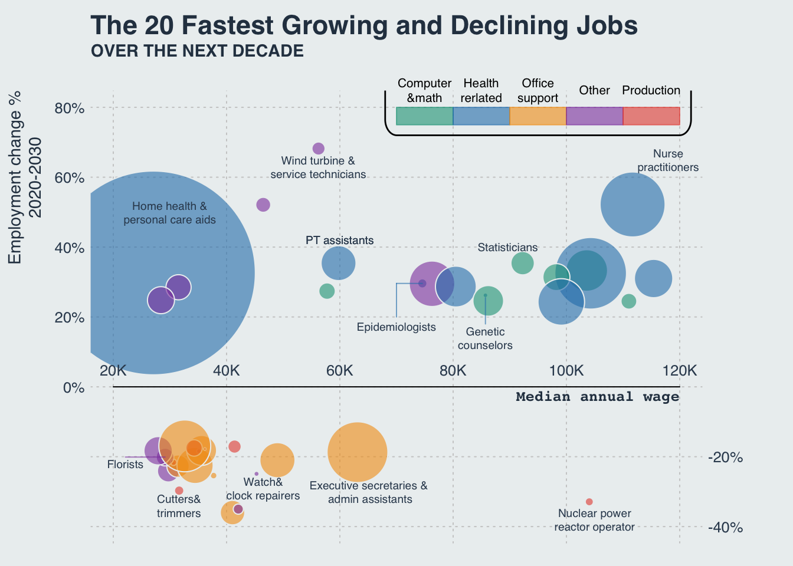
| Version | Author | Date |
|---|---|---|
| fd38753 | Anand | 2023-03-26 |
Donut chart: Blood group distrubution
Recreating plot from visualcapitalist
# Blood group distribution across the world
# MIT License
# Copyright (c) 2022 Anand Mayakonda <anandmt3@gmail.com>
# Recreating plot from https://www.visualcapitalist.com/visualizing-the-most-widespread-blood-types-in-every-country/
data = read.delim(file = "data/10-donut_BloodGroup.tsv")
data2 = read.delim(file = "data/10-donut_BloodGroupCountry.tsv")
cols = hcl.colors(n = 8, palette = "Viridis", alpha = 0.8)
cols = c("#c23616", "#f0932b", "#f9ca24", "#6ab04c", "#40739e", "#192a56", "#ff9ff3", "purple")
# lomat = matrix(data = c(1,1,1,2,2,2,3,3,3,4,4,4,5,5,5,
# 6,6,6,7,7,7,8,8,8,9,9,9,10,10,10,
# 11,11,11,0,12,12,12,0,13,13,13,0,14,14,14,
# 0,0,15,15,15,0,16,16,16,0,17,17,17,0,0),
# nrow = 4, byrow = TRUE)
lomat = matrix(data = c(rep(1, 5), 2:11, rep(12, 5)), nrow = 4, ncol = 5, byrow = TRUE)
lo = layout(mat = lomat, heights = c(0.5, 3, 3, 1))
par(mar = c(0, 0, 0, 0), bg = "#ecf0f1", family = "mono")
plot(NA, xlim = c(0, 1), ylim = c(0, 1), axes = FALSE)
title(
main = "Distribution of Blood types by country",
line = -3,
cex.main = 2.3,
col.main = "white",
xpd = TRUE,
outer = TRUE,
family = "mono", col.main = "#222f3e"
)
# text(
# x = 0.5,
# y = 0.3,
# label = "Distribution of Blood types by country",
# cex = 2,
# font = 2,
# col = "white", xpd = TRUE, family = "Helvetica"
# )
par(mar = c(1, 1, 1, 1))
for(i in 1:nrow(data2)){
pie(
as.numeric(data2[i, 2:9]),
clockwise = TRUE,
col = cols,
border = cols,
labels = paste0(as.numeric(data2[i, 2:ncol(data)])[1:4], "%"), radius = 1.05, col.lab = "white", xpd = TRUE, cex = 0.8
) #
points(x = 0, y = 0, pch = 19, cex = 8, col = "#ecf0f1", lwd = 0)
#legend(x = "bottomright", legend = data[i,"Region"], bty = "n", cex.title = 1.2, adj = 0)
text(
x = 0,
y = -1.6,
label = paste0(data2[i, "Country"], "\n", data2[i, "Pop"]),
family = "mono",
cex = 1.4,
xpd = TRUE,
font = 2,
col = "#535c68"
)
}
plot(NA, xlim = c(0, 1), ylim = c(0, 1), axes = FALSE)
legend(
x = "center",
legend = c("O+", "A+", "B+", "AB+", "O-", "A-", "B-", "AB-"),
col = cols,
ncol = 8,
pch = 15, bty = "n", cex = 1.7
)
| Version | Author | Date |
|---|---|---|
| fd38753 | Anand | 2023-03-26 |
# for(i in 1:nrow(data)){
# pie(
# as.numeric(data[i, 2:ncol(data)]),
# clockwise = TRUE,
# col = cols,
# border = cols,
# labels = paste0(as.numeric(data[i, 2:ncol(data)]), "%"), radius = 1.05, col.font = cols, xpd = TRUE, cex = 0.8
# ) #
# points(x = 0, y = 0, pch = 19, cex = 8, col = "white", lwd = 0)
# #legend(x = "bottomright", legend = data[i,"Region"], bty = "n", cex.title = 1.2, adj = 0)
# text(x = 0, y = -2, label = data[i,"Region"], family = "mono", cex= 1.4, xpd= TRUE, font = 2)
# }Bubble chart: California fires
Recreating plot from buzzfeed
Original ggplot source
#download.file(url = "https://raw.githubusercontent.com/BuzzFeedNews/2018-07-wildfire-trends/master/data/calfire_frap.csv", destfile = "data/09-calfire_frap.csv")
data = read.delim(file = "data/09-calfire_frap.csv", sep = ",")
date_lvls = seq.Date(as.Date("1950/01/01"), as.Date("2017/12/31"), 1)
md = names(table(substr(date_lvls, 6, 10)))
data$reporting_date = factor(data$alarm_date, levels = as.character.Date(date_lvls), ordered = TRUE)
data$reporting_date = as.Date(data$reporting_date)
data = data[order(data$reporting_date),]
data$md = substr(x = data$reporting_date, 6, 10)
data$md = factor(x = data$md, levels = md, ordered = TRUE)
par(mar = c(1, 3, 3, 1), family = "mono")
plot(NA, pch = NA, axes = FALSE, ylim = c(1950,2017), xlim = c(1, 366))
abline(h = 1950:2017, v = c(0, cumsum(table(substr(md, 1, 2)))), col = "gray90")
abline(h = seq(1950, 2010, 10), col = adjustcolor("#34495e", 0.5), lwd = 1)
symb_cols = adjustcolor(col = "#e74c3c", alpha.f = 0.6)
symbols(
x = data$md,
y = data$year_, add = TRUE,
circles = sqrt(data$gis_acres / pi),
inches = 0.12, bty = "n", pch = 19, bg = symb_cols, fg = symb_cols
)
axis(side = 1, at = cumsum(table(substr(md, 1, 2))), labels = month.abb, tick = FALSE, col.axis = "#34495e", line = -1.2, cex.axis = 0.7)
axis(side = 2, at = seq(1950, 2010, 10), las = 2, tick = FALSE, line = -1, col.axis = "#34495e")
title("Big fires have gotten more common in California", adj = 0, line = 2, family = "Helvetica", col.main = "#2C3A47")
title("Each fire is a dot that is scaled by the area that ultimately burned, centered on the date on which\nthe alarm was sounded", adj = 0, line = 0, font.main = 1, cex.main = 0.8, family = "Helvetica", col.main = "#2C3A47")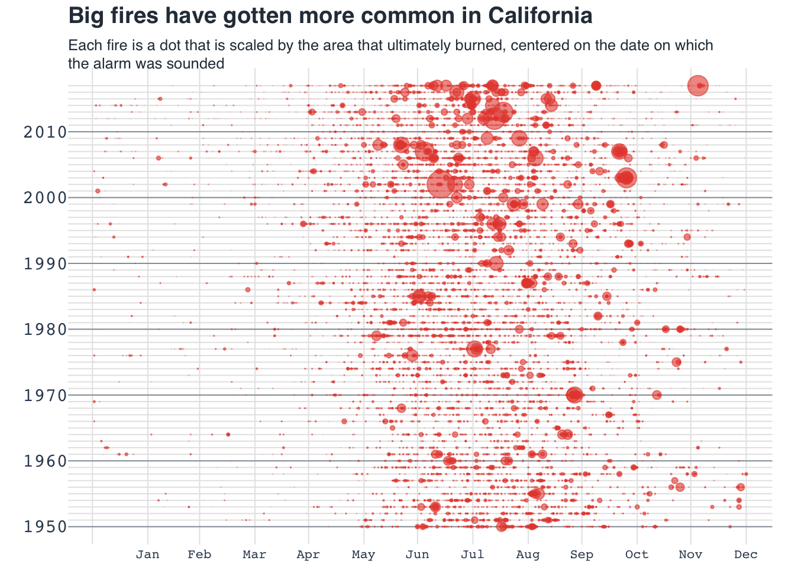
| Version | Author | Date |
|---|---|---|
| fd38753 | Anand | 2023-03-26 |
Area chart: US migration
data = read.table(file = "data/07-areachart_USmigration.csv", header = TRUE, sep = ",")
#Maximum
max_pop = max(rowSums(data[,2:ncol(data)]))
layout(mat = matrix(data = c(1:2), nrow = 2), heights = c(0.75, 6))
par(family = "mono")
par(mar = c(0, 0, 0, 0))
plot(NA, xlim = c(0, 1), ylim = c(0, 1), frame.plot = FALSE, axes = FALSE, xlab = NA, ylab = NA)
title_main = "Migration to the US by world region, 1820-2009"
title_main2 = "The numbers are recorded by decade\nFor example, the numbers recorded for 1905 tell us the number of immigrants between 1900 and 1910."
title(main = title_main, cex.main = 1, line = -1, family = "Helvetica", col.main = "#2C3A47", adj = 0)
title(main = title_main2, cex.main = .75, line = -2.5, family = "Helvetica", col.main = "#2C3A47", adj = 0, font.main = 1)
par(mar = c(1, 1, 1, 3))
plot(
NA,
xlim = range(data$Region.and.country.of.last.residence.1),
ylim = c(0, max_pop),
xlab = NA,
ylab = NA,
frame.plot = FALSE,
axes = FALSE
)
abline(h = pretty(c(0, max_pop)), col = "gray90")
axis(side = 4, at = pretty(c(0, max_pop)), labels = paste0(seq(0, 12, 2), "M"), las = 2, tick = FALSE, line = .1, col.axis = "#34495e", cex.axis = 0.8)
axis(side = 1, at = seq(1820, 2000, 10), tick = FALSE, cex.axis = 0.8, col.axis = "#34495e", line = -1.5)
rect(xleft = 1914, ybottom = 0, xright = 1918, ytop = max_pop, col = "#95a5a6", border = NA)
text(x = 1916, y = max_pop, labels = "WW1", cex = 0.75, pos = 3, xpd = TRUE, font = 4, adj = 1)
rect(xleft = 1939, ybottom = 0, xright = 1945, ytop = max_pop, col = "#95a5a6", border = NA)
text(x = 1942, y = max_pop, labels = "WW2", cex = 0.75, pos = 3, xpd = TRUE, font = 4, adj = 1)
cols = c("white", "#1d81a2", "#004765", "#3a96b8", "#48adc0", "#329a9b", "#2b8589",
"#257085", "#005d71",
"#b4241c", "#cd3d2e", "#dc464b", "#e65340",
"#ffa126", "#ffca76", "#ffe59c", "#fffbb1", "#ffdc6b", "#ffbb7f",
"#009a69", "#003f65", "#181818", "black")
#cols = adjustcolor(col = cols, alpha.f = 0.7)
for(i in 22:2){
if(i > 2){
polygon(
c(
data[1, "Region.and.country.of.last.residence.1"],
data$Region.and.country.of.last.residence.1,
data[nrow(data), "Region.and.country.of.last.residence.1"]
),
c(0, rowSums(data[, 2:i, drop = FALSE]), 0),
col = cols[i], border = cols[i]
)
}else{
polygon(data$Region.and.country.of.last.residence.1,
data[,i],
col = cols[i], border = cols[i])
}
}
to_hghlt = c("Germany", "United.Kingdom", "Austria.Hungary","Ireland", "Philippines", "Italy", "Russia", "India", "China", "Mexico", "Central.America")
for(h in to_hghlt){
i = which(colnames(data) == h)
max_idx = which(data[,i] == max(data[,i]))
y_point = data[,i] + rowSums(data[,2:(i-1), drop = FALSE])
text(x = data[max_idx,1], y = y_point[max_idx], labels = colnames(data)[i], cex = 0.55, xpd = TRUE, font = 2, family = "mono", col = "#192a56")
}
text(x = 1900, y = 1e6, label = "EUROPE", col = "white", cex = 1.2, font = 2)
text(x = 1990, y = 2e6, label = "ASIA", col = "white", cex = 1.2, adj = 0.8, font = 2)
text(x = 1990, y = 6e6, label = "AMERICA", col = "#2c3e50", cex = 1.2, adj = 0.7, font = 2)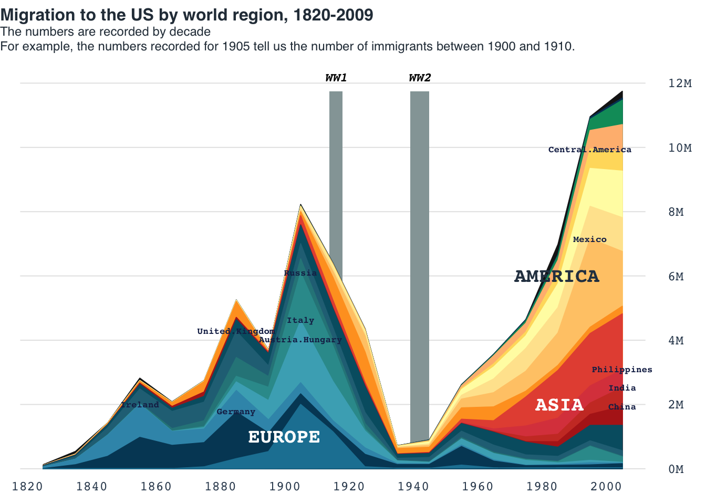
| Version | Author | Date |
|---|---|---|
| fd38753 | Anand | 2023-03-26 |
Parliament plot: German Bundestag
Data source: https://www.tatsachen-ueber-deutschland.de/en/politics-germany/parliament-parties
Acknowledgments: https://www.datawrapper.de/charts
nseats = 736
nrows = 14
seat_distr = c(4, 80, 45, 152, 92, 118, 206, 39)
names(seat_distr) = c("Independent", "AfD", "CSU", "CDU", "FDP", "The Greens", "SPD", "The Left")
seat_cols = c("#7f8c8d", "#f368e0", "#2980b9", "#2c3e50", "#D6A2E8", "#27ae60", "#d35400", "#8e44ad")
names(seat_cols) = names(seat_distr)
#Simple estimate for how many seats (dots) in concentric arcs
n_seats_per_row = ((pi * nrows:1)/sum(pi * nrows:1)) * nseats
n_seats_per_row = ceiling(n_seats_per_row)
x <- seq(0, pi, length.out = n_seats_per_row[1])
xlims = range(cos(x) * nrows)
ylims = range(sin(x) * nrows)
ylims = c(-max(ylims), max(ylims))
plot_data = data.frame()
for(i in nrows:1){
x <- seq(0, pi, length.out = rev(n_seats_per_row)[i])
plot_data = rbind(plot_data, data.frame(cos(x) * i, sin(x) * i, i))
}
colnames(plot_data) = c("x", "y", "row")
plot_data = plot_data[1:nseats,]
#--Comment out the below section to avoid spiral ordering
plot_data_spl = split(plot_data, ~row)
max_row = max(unlist(lapply(plot_data_spl, nrow)))
data_ordered = data.frame()
for(i in seq_len(max_row)){
data_i = lapply(plot_data_spl, function(dat){
dat[i,]
})
data_i = do.call("rbind", data_i)
data_ordered = rbind(data_ordered, data_i)
}
#plot_data = data_ordered[!is.na(data_ordered$x),]
#--
plot_data$party = rep(x = names(seat_distr), seat_distr)
layout(mat = matrix(data = c(1:3), nrow = 3), heights = c(1, 6, 0.75))
par(family = "mono")
par(mar = c(0, 0, 1, 0))
plot(NA, xlim = c(0, 1), ylim = c(0, 1), frame.plot = FALSE, axes = FALSE, xlab = NA, ylab = NA)
title_main = "The 20th Bundestag"
title_main2 = "Parliament & Parties of the German Bundestag"
title_sub = "736 members of parliament are represented"
title(main = title_main, cex.main = 1.8, line = -0.5, family = "Helvetica", col.main = "#2C3A47")
title(main = title_main2, cex.main = 1.5, line = -2, family = "Helvetica", col.main = "#2C3A47")
title(main = title_sub, cex.main = 1.2, font = 3, line = -3.25,family = "Helvetica", col.main = "#2C3A47")
par(mar = c(0.75, 0, 0.75, 0))
plot(NA, xlim = xlims, ylim = ylims , "", asp = 1, xlab = NA, ylab = NA, frame.plot = FALSE, axes = FALSE)
points(x = plot_data$x, y = plot_data$y, pch = 19, col = seat_cols[plot_data$party], cex = 0.65)
x <- seq(0, pi, length.out = 500)
#Outer ring
points(cos(x) * (nrows+0.5), sin(x) * (nrows+0.5), type = "l", lwd = 3, col = "#ea8685")
points(cos(x) * -(nrows+0.5), sin(x) * -(nrows+0.5), type = "l", lwd = 3, col = "#ea8685")
#Outer ring 2
rng_col2 = adjustcolor("#ea8685", 0.4)
points(cos(x) * (nrows+1), sin(x) * (nrows+1), type = "l", lwd = 3, col = rng_col2)
points(cos(x) * -(nrows+1), sin(x) * -(nrows+1), type = "l", lwd = 3, col = rng_col2)
text(x = 0, -8, label = "736\nSEATS", font = 2, col = "#34495e", cex = 2.5)
par(mar = c(0, 0, 0, 0), family = "Helvetica")
plot(NA, xlim = c(0, 1), ylim = c(0, 1), frame.plot = FALSE, axes = FALSE, xlab = NA, ylab = NA)
legend(
x = "bottom",
legend = paste0(names(seat_distr), " (", seat_distr, ")"),
ncol = 4,
text.col = seat_cols,
bty = "n", xpd = TRUE, cex = 1, text.font = 2
)
| Version | Author | Date |
|---|---|---|
| fd38753 | Anand | 2023-03-26 |
Heatmap: Measles
Recreating the popular maeasles vaccine heatmap from WSJ
acknowledgments:
- Initial attempt in R by Mick Watson in base R using heatmp and gplots
- ggplot version
- ComplexHeatmap by Zuguang Gu
Raw data matrix obtained as a part of ComplexHeatmap
package.
NOTE: Counts are raw and not normalized for per 100K as in original WSJ plot. Color grading are according to the breaks in the number of cases rather than being continuous.
mat = readRDS(system.file("extdata", "measles.rds", package = "ComplexHeatmap"))
#mat = readRDS("data/measles.Rds")
#Get rid of some of the entries
rem_states = c(
"AMERICAN.SAMOA",
"GUAM",
"NEW.YORK.CITY",
"NORTHERN.MARIANA.ISLANDS",
"PAC.TRUST.TERR",
"PUERTO.RICO",
"RHODE.ISLAND",
"UPSTATE.NEW.YORK",
"VIRGIN.ISLANDS"
)
#Since image() flips the data, sort it before plotting
us_stats = sort(setdiff(x = rownames(mat), rem_states), decreasing = TRUE)
mat = mat[us_stats,]
colpal = c(
"white", "#ecf0f1",
"#e7f0fa",
"#c9e2f6",
"#95cbee",
"#0099dc",
"#4ab04a",
"#ffd73e",
"#eec73a",
"#e29421",
"#e29421",
"#f05336",
"#ce472e"
)
break_pnts = c(0, 50, 100, 250, 500, 1000, 2000, 4000, 5000, 10000, 25000, 50000, 100000, 125000)
layout(mat = matrix(data = c(1:2), nrow = 2), heights = c(6, 0.75))
par(mar = c(1, 6, 3, 0.5), family = "mono")
image(y = 1:nrow(mat), x = 1:ncol(mat),
z = t(mat),
axes = FALSE,
xaxt = "n",
yaxt = "n",
xlab = "",
ylab = "", col = colpal, breaks = break_pnts
)
#
#contour(t(mat), add = TRUE, drawlabels = FALSE)
abline(h = (1:nrow(mat)) + 0.5, v = (1:ncol(mat)) + 0.5, col = "white")
mtext(
text = colnames(t(mat)),
side = 2,
at = 1:nrow(mat),
font = 2,
line = 0.4,
las = 2,
cex = 0.5,
col = "#34495e"
)
vac_idx = which(colnames(x = mat) == "1963")
abline(v = vac_idx-0.5, col = "black", lwd = 1.2)
lab_at = seq(1930, 2000, 10)
for(lab in lab_at){
lab_idx = which(colnames(mat) == lab)
axis(side = 1, at = lab_idx, labels = lab, col.axis = "#34495e", tick = F, line = -1, cex.axis = 0.6, gap.axis = 0.1, xpd = TRUE)
}
title_main = "Impact of vacccines on Measles in the US states (1930-2001)"
title_sub = "Vaccine introduced in 1963"
title(main = title_main, adj = 0, cex.main = 0.95, line = 2)
title(main = title_sub, adj = 0.5, cex.main = 0.8, line = 1, font = 3, adj = 0)
par(mar = c(0, 0, 0, 0), family = "mono")
plot(NA, xlim = c(0, 1), ylim = c(0, 1), frame.plot = FALSE, axes = FALSE, xlab = NA, ylab = NA)
legend(x = "center", legend = break_pnts, col = colpal, pch = 15, ncol = 7, bty = "n", cex = 0.65, title = "no. of cases, upto")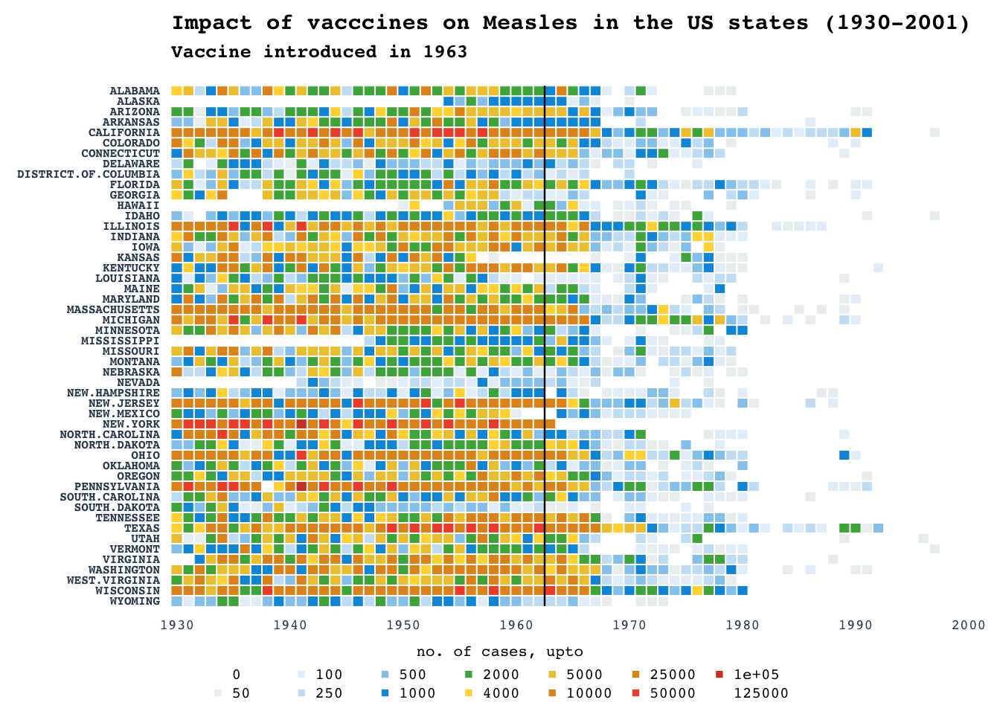
| Version | Author | Date |
|---|---|---|
| fd38753 | Anand | 2023-03-26 |
Bubble charts: Rich vs Health
Data obtained from datawrapper.
data = data.table::fread(input = "data/06-scatterplot_RichGDP.csv", data.table = FALSE)
data$population = as.numeric(data$population)
#data$bub_size = data$population/max(data$population, na.rm = TRUE)
cols = c("#34495e", "#ff5252", "#34ace0", "#ffb142", "#218c74", "#84817a")
cols = adjustcolor(col = cols, alpha.f = 0.6)
names(cols) = names(table(data$regions))
title_main = "The richer, the healthier"
title_sub = "GDP per person adjusted for differences in purchasing power (in 2011 international dollars) and life expectancy in years for selected countries, 2018.\nThe bigger a circle, the more people live in a country."
layout(mat = matrix(data = c(1:2), nrow = 2), heights = c(2, 6))
par(mar = c(0, 0, 0, 0))
plot(NA, xlim = c(0, 1), ylim = c(0, 1), frame.plot = FALSE, axes = FALSE, xlab = NA, ylab = NA)
text(x = 0, y = 0.8, labels = title_main, cex = 1, font = 2, adj = 0)
text(x = 0, y = 0.6, labels = title_sub, cex = 0.6, font = 3, adj = 0)
legend(x = .1, y = 0.4, legend = names(cols), col = cols, pch = 19, ncol = 3, bty = "n", cex = 0.7)
data$logGDP = log10(data$`GDP per capita`)
par(mar = c(2, 2, 0, 1))
plot(NA, xlim = range(pretty(data$logGDP)), ylim = c(50, 90), xlab = NA, ylab = NA, frame.plot = FALSE, axes = FALSE)
axl_lb = round(10^pretty(data$logGDP))
axl_lb = ifelse(test = axl_lb > 1000, yes = paste0(round(axl_lb/1000), "k"), no = round(axl_lb))
axis(side = 1, at = pretty(data$logGDP), labels = axl_lb, col.axis = "#7f8c8d", tick = FALSE, col = "gray", cex.axis = 0.8, line = -.5)
axis(side = 2, at = seq(50, 100, 10), col.axis = "#7f8c8d", tick = FALSE, col = "gray", cex.axis = 0.8, las = 2, line = -0.5)
abline(h = seq(50, 100, 10), v = pretty(data$logGDP), col = "gray90")
text(x = rev(pretty(data$logGDP))[1], y = 50, labels = "GDP per capita", col = "#34495e", adj = 1, cex = 0.7, font = 2)
text(x = pretty(data$logGDP)[1], y = 90, labels = "Life Expectancy", col = "#34495e", adj = 0, cex = 0.7, font = 2)
symbols(
x = data$logGDP,
y = data$`Life expectancy`,
circles = sqrt(data$population / pi),
inches = 0.18, add = TRUE, bg = cols[data$regions], fg = cols[data$regions]
)
bot_cntrs = data[data$country %in% c("South Africa", "China", "Afghanistan", "Lesotho", "United Arab Emirates"),]
text(x = bot_cntrs$logGDP, y = bot_cntrs$`Life expectancy`, labels = bot_cntrs$country, pos = 1, cex = 0.6, col = "#2c2c54")
top_cntrs = data[data$country %in% c("Liberia", "Timor-Leste", "Nicaragua", "Costa Rica"),]
text(x = top_cntrs$logGDP, y = top_cntrs$`Life expectancy`, labels = top_cntrs$country, pos = 3, cex = 0.6, col = "#2c2c54")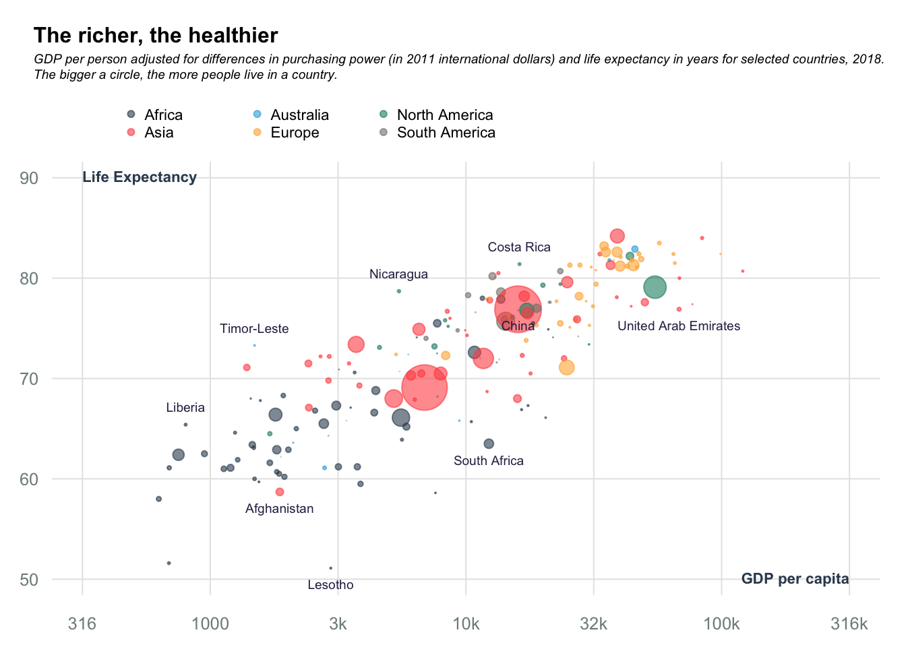
| Version | Author | Date |
|---|---|---|
| fd38753 | Anand | 2023-03-26 |
Donut charts: Wealthiset percentage
Data obtained from datawrapper.
data = read.table("data/08-donutplot_TopWealth.csv", sep = ",", header = TRUE)Warning in read.table("data/08-donutplot_TopWealth.csv", sep = ",", header =
TRUE): incomplete final line found by readTableHeader on
'data/08-donutplot_TopWealth.csv'lo =layout(mat = matrix(data = c(1, 1, 1, 2:7), nrow = 3, ncol = 3, byrow = TRUE), heights = c(1.7, 3, 3))
par(mar = c(0, 0, 0, 0))
title_main = "Who gets which slice of the pie?"
title_sub = "How much of the wealth of a country do the poorest 50% own?\nHow much do the top 10% own?"
plot(NA, xlim = c(0, 1), ylim = c(0, 1), frame.plot = FALSE, axes = FALSE, xlab = NA, ylab = NA)
text(x = 0, y = 0.9, labels = title_main, cex = 1.5, font = 2, adj = 0)
text(x = 0, y = 0.6, labels = title_sub, cex = 1.2, font = 3, adj = 0)
legend(x = .1, y = 0.4, legend = c("bottom 50%", "next 40%", "top 10%"), col = c("#b33939", "#f7f1e3", "#40407a"), pch = 15, ncol = 3, bty = "n", cex = 1.4)
par(mar = c(2, 2, 2, 2))
for (i in 2:ncol(data)) {
pie(
data[, i],
radius = 1,
clockwise = TRUE,
labels = paste0(round(data[, i]), "%"), border = "white",
col = c("#b33939", "#f7f1e3", "#40407a")
)
points(x = 0, y = 0, pch = 19, cex = 10, col = "white", lwd = 0)
title(main = colnames(data)[i], adj = 0)
}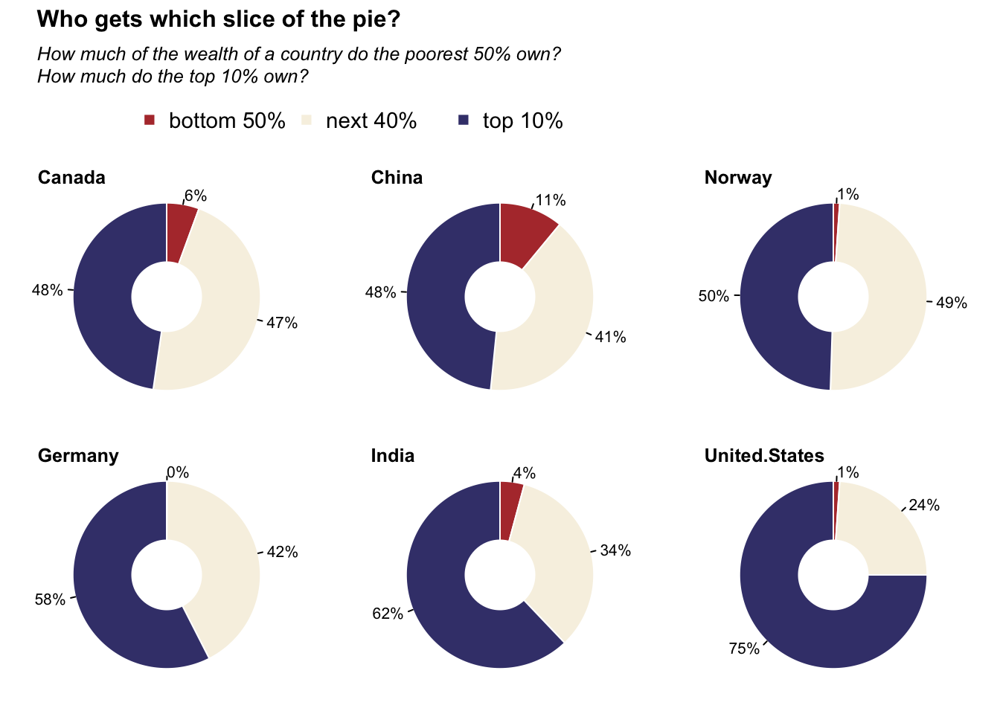
| Version | Author | Date |
|---|---|---|
| fd38753 | Anand | 2023-03-26 |
Line chart: COVID19 preprints
Number of COVID19 articles in arxiv preprints
Data obtained from biorxiv API
arxiv_data = read.delim(file = "data/05-linechart_COVIDrxiv.tsv")
arxiv_data$rel_date = as.Date.character(arxiv_data$rel_date)
date_lvls = seq.Date(as.Date(arxiv_data[1,"rel_date"]), as.Date(arxiv_data[nrow(arxiv_data),"rel_date"]), 1)
arxiv_data$date = factor(x = arxiv_data$rel_date, levels = as.character.Date(date_lvls), ordered = TRUE )
biorxiv = data.frame(n_articles = unlist(lapply(split(arxiv_data[arxiv_data$rel_site %in% "bioRxiv",], ~date), nrow)))
medrxiv = data.frame(n_articles = unlist(lapply(split(arxiv_data[arxiv_data$rel_site %in% "medRxiv",], ~date), nrow)))
data = merge(biorxiv, medrxiv, by = "row.names", suffixes = c("_biorxiv", "_medrxiv"))
data$n_articles = rowSums(data[,c("n_articles_biorxiv", "n_articles_medrxiv")])
rownames(data) = data$Row.names
#data = data.frame(n_articles = unlist(lapply(split(arxiv_data, ~date), nrow)))
data$ym = substr(x = rownames(data), start = 1, stop = 7)
data$yr = substr(x = rownames(data), start = 1, stop = 4)
month_lines = cumsum(lapply(split(data, ~ym), nrow))
year_lines = cumsum(lapply(split(data, ~yr), nrow))
#
heatcols = colorRampPalette(c("#EFF3FF", "#C6DBEF", "#9ECAE1", "#6BAED6", "#4292C6", "#2171B5", "#084594"))(180)
par(mar = c(3, 3, 4, 1), family = "mono")
plot(NA, xlim = c(0, nrow(data)), ylim = c(0, 170), frame.plot = FALSE, axes = FALSE, xlab = NA, ylab = NA)
abline(v = month_lines, col = "gray90", lty = 1, lwd = 0.6)
abline(v = year_lines[c("2020", "2021")], col = "#2c3e50", lwd = 0.9)
abline(h = seq(0, 150, 25), col = "gray90", lwd = 0.9, lty = 2)
axis(side = 1, at = month_lines, labels = substr(x = names(month_lines), 6, 7), las = 2, tick = FALSE, cex.axis = 0.6, line = -0.75, font.axis = 3, col.axis = "#95a5a6")
axis(side = 2, at = seq(0, 150, 25), labels = seq(0, 150, 25), las = 2, tick = FALSE, line = -0.5, col.axis = "#95a5a6")
axis(side = 3, at = year_lines[c("2020", "2021")], labels = c("2020", "2021"), tick = FALSE, line = -1, col.axis = "#8e44ad")
pnt_col = "#95a5a6"
# points(
# x = 1:nrow(data),
# y = data$n_articles,
# pch = 20,
# col = adjustcolor(col = pnt_col, alpha.f = .5), cex = 0.9
# )
#lines(smooth.spline(x = 1:nrow(data), y = data$n_articles), col = pnt_col, lwd = 3)
#e67e22
biorxiv_col = "#e67e22"
points(
x = 1:nrow(data),
y = data$n_articles_biorxiv,
pch = 20,
col = adjustcolor(col = biorxiv_col, alpha.f = 0.2), cex = 0.9
)
lines(smooth.spline(x = 1:nrow(data), y = data$n_articles_biorxiv), col = biorxiv_col, lwd = 3)
medrxiv_col = "#27ae60"
points(
x = 1:nrow(data),
y = data$n_articles_medrxiv,
pch = 20,
col = adjustcolor(col = medrxiv_col, alpha.f = 0.2), cex = 0.9
)
lines(smooth.spline(x = 1:nrow(data), y = data$n_articles_medrxiv), col = medrxiv_col, lwd = 3)
#mtext(text = "Month", side = 1, line = 1.5, font = 2)
#mtext(text = "# of articles", side = 2, line = 2, font = 2)
title(main = "Frequency of COVID19 articles in bioRxiv and medRxiv", adj = 0, line = 2, col.main = "#34495e", cex.main = 1)
legend(x = "topleft", legend = c("bioRxiv", "medRxiv"), col = c(biorxiv_col, medrxiv_col), bty = "n", lwd = 2)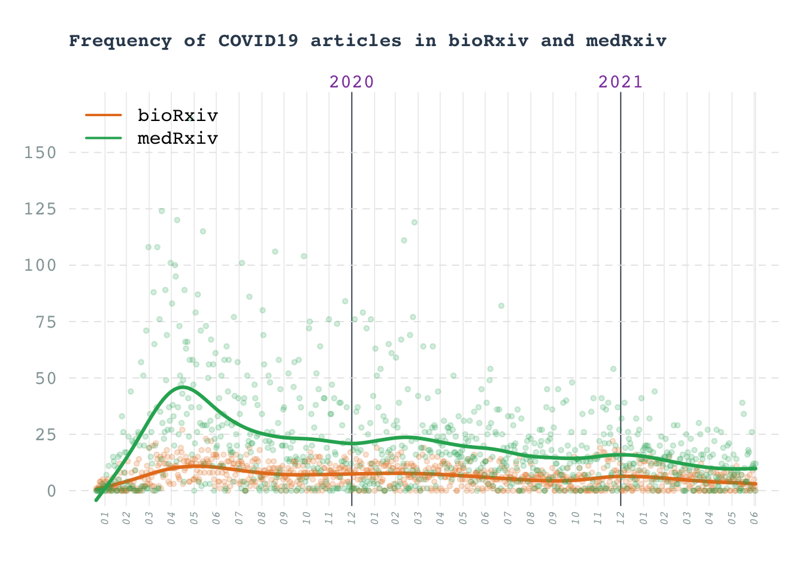
| Version | Author | Date |
|---|---|---|
| fd38753 | Anand | 2023-03-26 |
Line chart: Cigerate consumption
Data obtained from datawrapper.
data = read.table("data/05-linechart_CigConsumption.csv", sep = ",", header = TRUE)
data[data == "null"] = NA
data = apply(data, 2, as.numeric)
data = as.data.frame(data)
rownames(data) = data$country
max_count = max(data[,2:ncol(data)], na.rm = TRUE)
title_main = "The rise and fall of cigarette consumption in developed countries"
title_sub = "Sales of cigarettes per adult per day, in selected countries.\nFigures include manufactured cigarettes, as well as an estimated\nnumber of hand-rolled cigarettes,per adult (ages 15+) per day."
layout(mat = matrix(data = c(1:2), nrow = 2), heights = c(2, 6))
par(mar = c(0, 0, 0, 0))
plot(NA, xlim = c(0, 1), ylim = c(0, 1), frame.plot = FALSE, axes = FALSE, xlab = NA, ylab = NA)
text(x = 0, y = 0.8, labels = title_main, cex = 1, font = 2, adj = 0)
text(x = 0, y = 0.35, labels = title_sub, cex = 1, font = 3, adj = 0)
par(mar = c(3, 2, 0, 1))
plot(NA, xlim = range(data$country), ylim = c(0, max_count), xlab = NA, ylab = NA, frame.plot = FALSE, axes = FALSE)
axis(side = 2, at = seq(0, 12, 2), labels = seq(0, 12, 2), line = 0, col.axis = "gray", cex.axis = 1, las = 2, tick = FALSE)
abline(h = seq(0, 12, 2), lwd = 1, col = "gray90")
text(x = data$country[1], y = 10, labels = "Sold cigarettes\nper day per adult", cex = 0.7, xpd = TRUE, adj = 0)
for(i in 2:ncol(data)){
points(x = data$country, y = data[,i], pch = "", type = "l", col = "#7f8c8d")
}
hghlt = c("United.States", "Germany", "France")
hghlt_cols = c("#c0392b", "#16a085", "#2980b9")
for(hghlt_idx in seq_along(hghlt)){
hghlt_col_idx = which(colnames(data) == hghlt[hghlt_idx])
points(x = data$country, y = data[,hghlt_col_idx], pch = "", type = "l", col = hghlt_cols[hghlt_idx], lwd = 2)
}
text(x = data$country[1], y = c(6:4), labels = hghlt, col = hghlt_cols, adj = 0)
axis(side = 1, at = pretty(data$country), labels = pretty(data$country), line = 0, tick = TRUE, col.axis = "#7f8c8d", col = "#7f8c8d")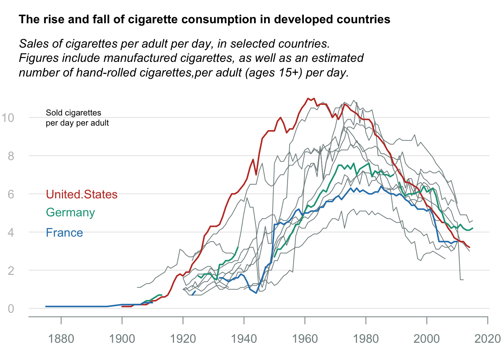
| Version | Author | Date |
|---|---|---|
| fd38753 | Anand | 2023-03-26 |
Arrow plot: Women in Parliment
Data obtained from datawrapper.
data = read.table("data/04-arrowplot_WomenInParliment.csv", sep = ",", header = TRUE)
colnames(data) = c("Country", "y2000", "y2020", "group")
data$diff = data$y2020 - data$y2000
pan_ratio = unname(unlist(lapply(split(data, ~group), nrow)))
asia = split(data, ~group)[[1]]
eu = split(data, ~group)[[2]]
title_txt = "Most countries have a higher share of women in their national parliaments than twenty years ago"
subtitle_txt = "Proportion of seats held by women in national parliaments, 2000 and 2020,\nin selected countries in Europe, Central Asia, East Asia and the Pacific"
lo = layout(matrix(1:3, ncol = 1), heights = c(2, pan_ratio))
par(mar = c(0, 0, 0, 0))
plot(NA, xlim = c(0, 1), ylim = c(0, 1), frame.plot = FALSE, axes = FALSE, xlab = NA, ylab = NA)
text(x = 0, y = 0.8, labels = title_txt, cex = 1, font = 2, adj = 0)
text(x = 0, y = 0.35, labels = subtitle_txt, cex = 1, font = 3, adj = 0)
par(mar = c(2, 7, 1, 1))
temp = lapply(split(data, ~group), function(dat){
plot(
NA,
xlim = c(0, 50),
ylim = c(1, nrow(dat)),
frame.plot = FALSE,
axes = FALSE,
xlab = NA,
ylab = NA
)
abline(h = 1:nrow(dat), v = c(0, 25, 50), col = "gray90", lwd = 0.6)
abline(v = 0, col = "gray")
rect(xleft = dat$y2000, ybottom = 1:nrow(dat), xright = dat$y2020, ytop = 1:nrow(dat), lwd = 1.5, col = ifelse(test = dat$diff > 0, yes = "#3498db", no = "#eb2f06"), border = ifelse(test = dat$diff > 0, yes = "#3498db", no = "#eb2f06"))
for(i in 1:nrow(dat)){
if(dat$diff[i] > 0){
points(x = dat$y2020[i], y = i, pch = ">", col = "#3498db")
text(x = dat$y2020[i], y = i, labels = paste0(dat$y2020[i], "%"), col = "#0c2461", pos = 4, cex = 0.9, xpd = TRUE)
}else{
points(x = dat$y2020[i], y = i, pch = "<", col = "#eb2f06")
text(x = dat$y2020[i], y = i, labels = paste0(dat$y2000[i], "%"), pos = 2, col = "#eb2f06", cex = 0.9, xpd = TRUE)
}
}
axis(side = 2, at = 1:nrow(dat), labels = dat$Country, las = 2, tick = FALSE, line = -0.75, col = "#2c3e50", cex.axis = 1)
axis(side = 1, at = c(0, 25, 50), labels = paste0(c(0, 25, 50), "%"), tick = FALSE, line = -1, col.axis = "gray50", cex.axis = 1)
title(x = "topright", main = dat$group[1], adj = 1, col.main = "#2c3e50", cex.main = 0.9)
})
bottom_anno = split(data, ~group)[[2]]
bottom_anno = unlist(bottom_anno[nrow(bottom_anno), c(2, 3)])
axis(side = 3, at = bottom_anno, labels = c("2000", "2020"), tick = FALSE, line = -1, col.axis = "#7f8c8d", cex.axis = 0.75)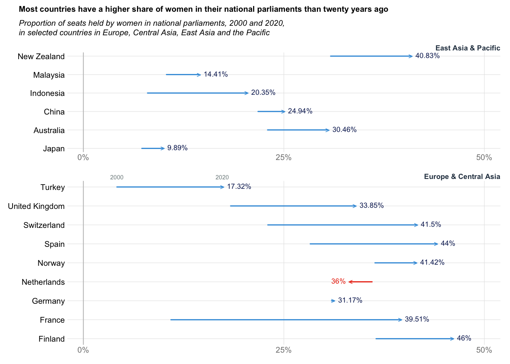
| Version | Author | Date |
|---|---|---|
| fd38753 | Anand | 2023-03-26 |
Dot plot: Oldest country
Data obtained from datawrapper.
data = read.table("data/03-dotplot_OldestCountry.csv", sep = ",", header = TRUE)
data$Country[1:3] = c("Monaco", "Japan", "Germany")
xlims = range(data[,2:4])
par(mar = c(3, 5, 4, 1))
plot(
NA,
xlim = xlims,
ylim = c(1, nrow(data)),
frame.plot = FALSE,
axes = FALSE,
xlab = NA,
ylab = NA
)
abline(h = 1:nrow(data), col = "gray90")
abline(v = pretty(xlims), col = "gray90")
axis(side = 3, at = pretty(xlims), labels = pretty(xlims), col = "gray90", tick = FALSE, line = -1, cex.axis = 0.75, col.axis = "gray50")
for(i in 1:nrow(data)){
combined = rev(data[,"Combined"])[i]
male = rev(data[,"Male"])[i]
female = rev(data[,"Female"])[i]
rect(xleft = male, ybottom = i-0.2, xright = female, ytop = i+0.2, col = "#bdc3c7", border = NA)
points(x = combined, y = i, col = "#34495e", pch = 19, cex = 1.5)
points(x = male, y = i, col = "#60a3bc", pch = 19, cex = 1.5)
points(x = female, y = i, col = "#e58e26", pch = 19, cex = 1.5)
}
legend(
x = 32, y = -0.5,
legend = c("Combined", "Male", "Female"),
border = NA,
ncol = 3,
col = c("#34495e", "#60a3bc", "#e58e26"),
pch = 19,
bty = "n", xpd = TRUE, cex = 0.9, adj = 0)
axis(
side = 2,
at = 1:nrow(data),
labels = rev(data$Country),
tick = FALSE,
cex.axis = 0.8, las = 2, line = -1, col = "#34495e"
)
title(
main = "Germany is the third-oldest country in the world",
line = 3,
adj = 0,
xpd = TRUE,
cex.main = 1,
col.main = "#2c3e50"
)
title(
main = "Median age in the three countries with the oldest population and selected other countries, in years",
line = 2,
adj = 0,
xpd = TRUE,
cex.main = 0.6,
col.main = "#2c3e50"
)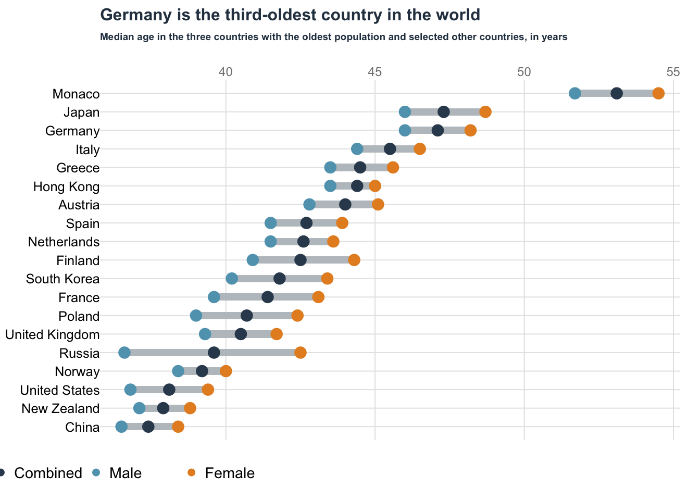
| Version | Author | Date |
|---|---|---|
| fd38753 | Anand | 2023-03-26 |
Split barplot: Population Pyramid
Data obtained from datawrapper.
data = read.table("data/02-splitbarplot_PopGermany.csv", sep = ",", header = TRUE)
max_count = max(data[,c("male", "female")]) #Maximum value
par(mar = c(2, 3, 2, 1))
plot(
NA,
xlim = c(-max_count, max_count),
ylim = c(1, nrow(data)),
frame.plot = FALSE,
axes = FALSE,
xlab = NA,
ylab = NA
)
axis(
side = 2,
at = 1:nrow(data)+0.4,
labels = rev(data$age.span),
tick = FALSE,
cex.axis = 0.8, las = 2, line = -1, col = "#34495e"
)
for(i in 1:nrow(data)){
row_idx = rev(1:nrow(data))[i] #Plot the data from bottom to top
rect(xleft = -max_count, ybottom = i, xright = -10, ytop = i+0.9, col = "#ecf0f1", border = NA)
rect(
xleft = -data[row_idx, "male"],
xright = -10,
ybottom = i,
ytop = i + 0.9, col = "#2980b9", border = NA,
)
pretty_pop_male = ifelse(test = data[row_idx, 2] < 1e6,
yes = paste0(round(data[row_idx, 2] / 1000, 1), "k"),
no = paste0(round(data[row_idx, 2] / 1e6, 1), "m"))
if(data[row_idx, 2] < 1e6){
text(
x = -data[row_idx, "male"],
y = i + 0.4,
labels = pretty_pop_male,
pos = 2,
xpd = TRUE, cex = 0.7, col = "black"
)
}else{
text(
x = -500,
y = i + 0.4,
labels = pretty_pop_male,
pos = 2,
xpd = TRUE, cex = 0.7, col = "white"
)
}
rect(xleft = -10, ybottom = i, xright = max_count, ytop = i+0.9, col = "#ecf0f1", border = NA)
rect(
xleft = data[row_idx, "female"],
xright = 10,
ybottom = i,
ytop = i + 0.9, col = "#c0392b", border = NA
)
pretty_pop_female = ifelse(test = data[row_idx, 3] < 1e6,
yes = paste0(round(data[row_idx, 3] / 1000, 1), "k"),
no = paste0(round(data[row_idx, 3] / 1e6, 1), "m"))
if(data[row_idx, 2] < 1e6){
text(
x = data[row_idx, "female"],
y = i + 0.4,
labels = pretty_pop_male,
pos = 4,
xpd = TRUE, cex = 0.7, col = "black"
)
}else{
text(
x = 500,
y = i + 0.4,
labels = pretty_pop_female,
pos = 4,
xpd = TRUE, cex = 0.7, col = "white"
)
}
}
text(x = -max_count, y = nrow(data)+0.45, labels = "male", adj = 0, cex = 0.8, font = 1)
text(x = max_count, y = nrow(data)+0.45, labels = "female", adj = 1, cex = 0.8, font = 1)
title(main = "Population projection for Germany, 2020", line = 1, adj = 0, col.main = "#2c3e50")
title(main = NA, sub = "Projection from 2015\nbased on continued trend with higher immigration
", line = 1, font.sub = 3, cex.sub = 0.6, adj = 1, col.sub = "#7f8c8d")
| Version | Author | Date |
|---|---|---|
| fd38753 | Anand | 2023-03-26 |
Bar plot: Bechdel Test
Data obtained from datawrapper.
data = read.table(file = "data/01-barplot_BechdelTest.csv", sep = ",", header = TRUE)
colnames(data) = c("Decade", "3 of 3", "2 of 3", "1 of 3", "0 of 3")
rownames(data) = data$Decade
data$Decade = NULL
data = t(data)
## Choose some color codes
colorcodes = c("#1abc9c", "#2980b9", "#d35400", "#c0392b")
#Adjust the margins (bottom, left, top, and right)
par(mar = c(4, 3, 3, 1))
b_idx = barplot(
data,
horiz = TRUE,
las = 2,
col = colorcodes,
border = NA,
axes = FALSE,
names.arg = rep(NA, ncol(data))
)
mtext(text = colnames(data), side = 2, at = b_idx, las = 2, cex = 0.85, col = "#2c3e50")
abline(v = seq(0, 100, 50), col = "gray90", lty = 1)
axis(
side = 3,
at = seq(0, 100, 50),
labels = paste0(seq(0, 100, 50), "%"),
tick = FALSE,
col.axis = "gray",
line = -1,
lwd = 0, cex.axis = 0.75
)
mainttl = "Percentage of films that pass the Bechdel test"
subttl = "Dataset includes 7,924 films.\nDataset has many more ratings for films released in recent decades, so earlier decades are likely to be less accurately represented.\nSome ratings given to films have been contested and may not be accurate."
subttl2 = "Source: Bechdel Test Website"
title(main = mainttl, line = 2, cex.main = 0.9, col = "#2c3e50")
title(
main = NA,
sub = subttl,
line = 3,
col.sub = "#7f8c8d",
adj = 1,
font = 3, cex = 0.3, cex.sub = 0.5
)
title(
main = NA,
sub = subttl2,
line = 1.5,
col.sub = "#7f8c8d",
adj = 1,
font = 3, cex = 0.3, cex.sub = 0.5
)
legend(
x = -1, y = -0.5,
legend = rownames(data),
border = NA,
ncol = nrow(data),
col = colorcodes,
pch = 15,
bty = "n", xpd = TRUE, title = "criteria passed", cex = 0.9, adj = 0)
for(i in 1:ncol(data)){
text(
y = b_idx[i],
x = cumsum(data[, i]),
labels = paste0(data[, i], "%"),
cex = .6, adj = 1, col = "#ecf0f1"
)
}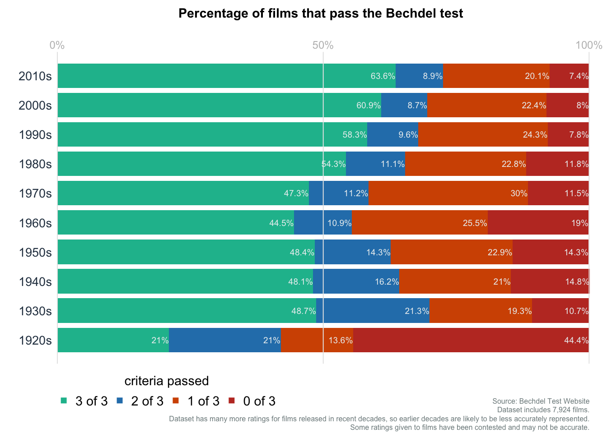
| Version | Author | Date |
|---|---|---|
| fd38753 | Anand | 2023-03-26 |
sessionInfo()R version 4.2.3 (2023-03-15)
Platform: x86_64-apple-darwin17.0 (64-bit)
Running under: macOS Big Sur ... 10.16
Matrix products: default
BLAS: /Library/Frameworks/R.framework/Versions/4.2/Resources/lib/libRblas.0.dylib
LAPACK: /Library/Frameworks/R.framework/Versions/4.2/Resources/lib/libRlapack.dylib
locale:
[1] en_US.UTF-8/en_US.UTF-8/en_US.UTF-8/C/en_US.UTF-8/en_US.UTF-8
attached base packages:
[1] stats graphics grDevices utils datasets methods base
other attached packages:
[1] workflowr_1.7.0
loaded via a namespace (and not attached):
[1] Rcpp_1.0.10 highr_0.10 compiler_4.2.3
[4] pillar_1.9.0 bslib_0.4.2 later_1.3.0
[7] git2r_0.31.0 jquerylib_0.1.4 berryFunctions_1.22.0
[10] tools_4.2.3 getPass_0.2-2 digest_0.6.31
[13] jsonlite_1.8.4 evaluate_0.20 lifecycle_1.0.3
[16] tibble_3.2.1 pkgconfig_2.0.3 rlang_1.1.0
[19] cli_3.6.1 rstudioapi_0.14 yaml_2.3.7
[22] xfun_0.38 fastmap_1.1.1 httr_1.4.5
[25] stringr_1.5.0 knitr_1.42 fs_1.6.1
[28] vctrs_0.6.1 sass_0.4.5 rprojroot_2.0.3
[31] data.table_1.14.8 glue_1.6.2 R6_2.5.1
[34] processx_3.8.0 fansi_1.0.4 rmarkdown_2.21
[37] callr_3.7.3 magrittr_2.0.3 whisker_0.4.1
[40] ps_1.7.3 promises_1.2.0.1 htmltools_0.5.5
[43] abind_1.4-5 httpuv_1.6.9 utf8_1.2.3
[46] stringi_1.7.12 cachem_1.0.7